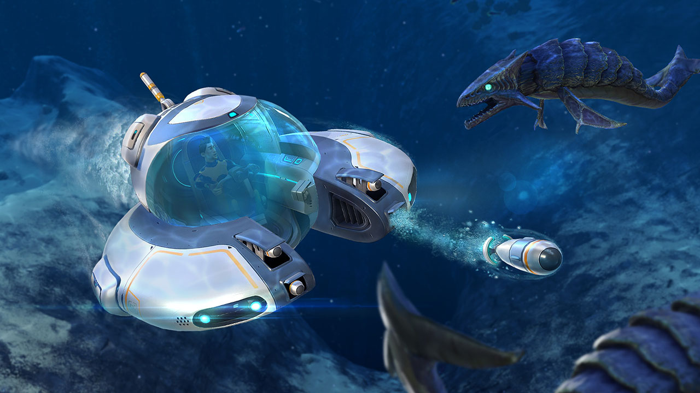
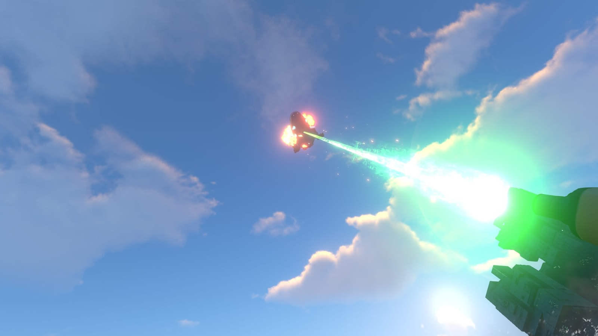

Subnautica
The Wacky Ocean Planet
by The Wonderful Emma - Sep 10th, 2025

Explore!
In act one, as I noted before, gameplay revolves around survival; the player does not venture too far from their escape pod and their primary goal is to search for food and water. In this segment, the player becomes familiar with the mechanics of crafting, power, tools, oxygen, and basic resources. Oxygen is perhaps the most important resource as it is the one to look out for most often. The player can upgrade their O2 tank to stay underwater for longer periods of time than the original 45 seconds. This Oxygen limit is the main factor in inhibiting further exploration both farther away from the starting point (the ‘Safe Shallows’) as well as deeper underwater.
As the player ventures a bit farther out for each trip, they uncover a scanner, the main tool of the game, and with the tool they learn about the flora and fauna around them as well as discover blueprints for new tools and upgrades. We shift into act two: exploration when the player uncovers the blueprints for the Seamoth, a basic submarine, and builds the vehicle. The quick Seamoth allows the player to effectively have infinite oxygen as long as the vehicle is not destroyed or they are not separated from it. The player is now inhibited by the seamoth’s crush limit (that is upgradeable) as to prevent the player from reaching the end game too quickly. (Though pressure does not affect the player outside of a vehicle in any other way than making O2 less efficient).
Discover!
In Act II, (or possibly Act I if the player hits certain markers first), three major events take place. The first is when the player performs a self-scan with the scan tool and is told at first that all results are nominal, but later that the player has contracted an alien bacterial i nfection. The second and third require the repair tool as when the player creates the tool, they fix the radio, resulting in locations of other escape pods to be transmitted to the player over the next few hours. At one point the player is contacted by the spaceship sunbeam which eventually tries to rescue them, but is destroyed by an alien laser. This then leads the player to explore the laser and discovers the remnants of an intelligent race, including a ray gun, a doomsday device, and the building being a quarantine enforcer for the alien bacteria the player contracted.These ‘precursors’ play a major role in the story of subnautica as well as the philosophy it presents but we will touch on that later.
The third event is the detonation of the crashed ship’s (The Aurora’s) nuclear engine, resulting in pollution in the form of radioactive leakage. The player is then encouraged to fix the leakage and stop the pollution in the environment. All these events allow for the continued exploration and uncovering of mystery in Subnautica, as the player, now equipped to travel across the surface quickly and use a wide array of tools, can travel these distances without starving, suffocating, or dehydrating. In the last event, that of the quantum detonation of the Aurora’s drive core, for most players, is one of the first times they hear the Reaper Leviathan’s roar. These giant terrifying beasts are lurking in the cloudy crash zone and elsewhere waiting to tear the player apart.